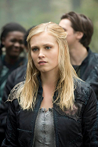
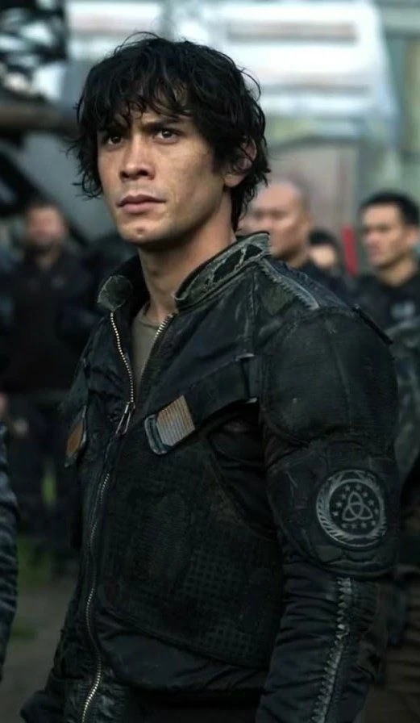
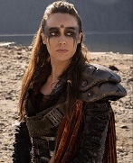
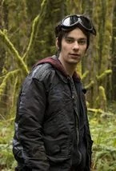
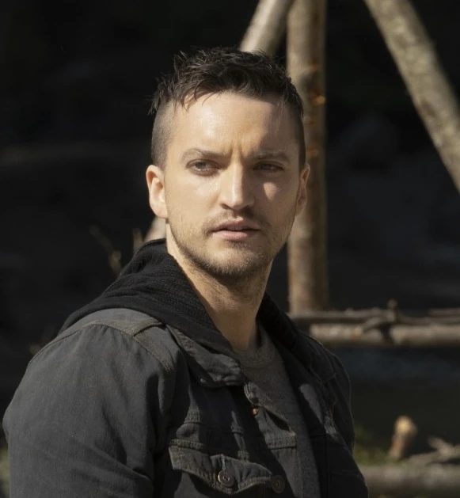

Los 100

Ge smaukdaun, gyon op nodataim , o lo que sería lo mismo : SI TE DERRIBAN, LEVÁNTATE DE NUEVO
INTRODUCCIÓN
- El desarrollador de la serie es : Jason Rothenberg
- El estreno de esta serie fue el 19 de marzo de 2014
- El último episodio de la serie fue retransmitido el 30 de septiembre de 2020
- La serie tiene 7 temporadas
- El total de episodios de la serie son 100 episodios
- Los episodios tienen una duración de entre 39 minutos y 45 minutos cada uno
RESUMEN DE LA SERIE
-
Los 100 es una serie de televisión estadounidense de drama y ciencia ficción postapocalíptica que se estrenó el 19 de marzo de 2014 en The CW, esta serie fue desarrollada por Jason Rothenberg y se basa vagamente en la serie de novelas del mismo nombre de Kass Morgan.
- EL RESUMEN POR TEMPORADAS SERÍA EL SIGUIENTE
La serie sigue a un grupo de sobrevivientes en el posapocalípsis, principalmente a un grupo de adolescentes criminales, incluidos Clarke Griffin (Eliza Taylor), Finn Collins (Thomas McDonell), Bellamy Blake (Bob Morley), Octavia Blake (Marie Avgeropoulos), Jasper Jordan (Devon Bostick), Monty Green (Christopher Larkin), Raven Reyes (Lindsey Morgan), John Murphy (Richard Harmon) y Wells Jaha (Eli Goree). Se encuentran entre las primeras personas de un hábitat espacial, el Arca, en regresar a la Tierra después de un devastador apocalipsis nuclear. Otros personajes principales incluyen a la Dra. Abby Griffin (Paige Turco), la madre de Clarke; Marcus Kane (Henry Ian Cusick), un miembro del consejo en el Arca; y Thelonious Jaha (Isaiah Washington), canciller del Arca y padre de Wells.
Noventa y siete años después de que un devastador apocalipsis nuclear aniquilara casi toda la vida en la Tierra, miles de personas ahora viven en una estación espacial que orbita la Tierra, que llaman el Arca. Tres generaciones han nacido en el espacio, llevando a la población del Arca más allá de su capacidad de carga. Cien detenidos juveniles son enviados a la Tierra en un último intento de determinar si es habitable. Descubren que algunos sobrevivieron al apocalipsis: los terrestres, que viven en clanes encerrados en una lucha de poder; los Grounders, otro grupo de terrestres que los Montañeses han convertido en caníbales; y los Montañeses, que viven en el Monte Weather, descendientes de aquellos que se encerraron antes del apocalipsis. Bajo el liderazgo de Bellamy y Clarke, los jóvenes intentan sobrevivir en las duras condiciones de la superficie, luchar contra los terrestres hostiles y establecer comunicación con el Arca.
En la segunda temporada, cuarenta y ocho de los detenidos restantes son capturados y llevados al Monte Weather por los Montañeses, que transfunden sangre de terrestres encarcelados como tratamiento antirradiación, ya que sus cuerpos no se han adaptado para lidiar con la radiación restante en la Tierra. Las pruebas médicas de los cuarenta y ocho muestran que su médula ósea permitirá que los Montañeses sobrevivan fuera de la contención, por lo que comienzan a tomar la médula ósea de los jóvenes. Mientras tanto, los habitantes del Arca aterrizaron varias estaciones en la Tierra y comenzaron una alianza con los terrestres para salvar a sus gentes, nombrando el asentamiento principal en la Estación Alfa «Campamento Jaha». La temporada termina con la masacre de los Montañeses para salvar a los prisioneros.
En la tercera temporada, la Estación Alfa pasó a llamarse Arkadia, se encuentra bajo una nueva administración cuando Pike, un exmaestro y mentor en el Arca, es elegido canciller y comienza una guerra con los terrestres. Pike mata a un campamento de guerreros terrestres mientras duermen, lo que daña aún más su relación ya frágil con ellos. Una inteligencia artificial llamada ALIE, a quien se le ordenó mejorar la vida de la humanidad, se revela que respondió resolviendo el problema de la sobrepoblación humana realizando el apocalipsis nuclear que devastó la Tierra, y comienza a usar chips de computadora ingeribles para tomar el control de las mentes de las personas. ALIE finalmente es destruida, pero no sin avisar de un inminente desastre apocalíptico.
En la cuarta temporada, cientos de reactores nucleares en todo el planeta se están derritiendo debido a décadas de negligencia que provocarán que la mayoría del planeta se vuelva inhabitable. Clarke y los demás buscan formas de sobrevivir a la próxima ola de radiación. Cuando se descubre que los terrestres con sangre negra, conocidos como los Sangre Nocturna, pueden metabolizar la radiación, Clarke y los demás intentan recrear la fórmula, pero no la prueban. Se descubre un viejo búnker que puede proteger a 1.200 personas durante más de cinco años desde el nuevo apocalipsis; cada uno de los doce clanes selecciona a cien personas para quedarse en el búnker. Un pequeño grupo decide regresar al espacio e intentar sobrevivir en los restos del Arca. Clarke, que ahora es una sangre nocturna, permanece sola en la superficie de la Tierra.
En la quinta temporada, seis años después de la fusión de los reactores nucleares, una nave de transporte de prisioneros llega al único punto verde que queda en la Tierra, donde Clarke y Madi, una terrestre Sangre Nocturna que también sobrevivió a la ola de radiación que barrió el planeta, han estado viviendo. Los que sobrevivieron en el espacio y en el búnker regresan sanos y salvos al suelo. Comienza una lucha por el Shallow Valley entre los prisioneros y un nuevo clan unido, conocido como Wonkru, que resulta en una batalla que termina con la destrucción del valle. Los sobrevivientes escapan al espacio y se quedan en criosueño mientras esperan que la Tierra se recupere. Sin embargo, Monty descubre que la Tierra aparentemente nunca se recuperará y, antes de morir de viejo, pone la nave prisión en rumbo a un nuevo planeta.
En la sexta temporada, después de 125 años en criosueño, Clarke, Bellamy y los demás se despiertan para descubrir que ya no están orbitando la Tierra y han sido llevados a un nuevo planeta habitable, Alfa, también conocido como Sanctum. Después de aterrizar en este planeta, descubren una nueva sociedad, liderada por familias gobernantes conocidas como los Originales. También descubren nuevos peligros en este nuevo planeta, y un misterioso grupo rebelde, conocido como los Hijos de Gabriel, así como la misteriosa Anomalía. Clarke cae víctima de los Originales y termina en una batalla con una de ellos por el control de su cuerpo, una lucha que finalmente gana. La temporada termina con la muerte de la mayoría de los Originales, pero también con la pérdida de Abby Griffin y Marcus Kane. A lo largo de la temporada, Madi es perseguida en la Llama por el espíritu del Comandante Oscuro, un malvado líder de los terrestres que gobernó cuando Indra era una niña. Para salvar a Madi, Raven se ve obligada a destruir la Llama, pero el Comandante Oscuro escapa.
La séptima temporada encuentra a los habitantes de Sanctum tratando de encontrar una manera de vivir juntos en paz, después de las secuelas de los acontecimientos de la temporada anterior, mientras luchan contra el Comandante Oscuro resucitado. Al mismo tiempo, Clarke y otros entran en conflicto con los misteriosos Discípulos, humanos de otro planeta que están convencidos de que Clarke tiene la clave para ganar la última guerra que se avecina. La temporada también explora la misteriosa Anomalía introducida en la sexta temporada, ahora identificada como un agujero de gusano que une seis planetas, uno de ellos la Tierra regenerada, entre sí. Después de desaparecer y ser creído muerto durante un tiempo, Bellamy regresa, pero se convierte a la causa de los Discípulos, lo que finalmente lleva a su muerte a manos de Clarke. Al final de la serie, el Comandante Oscuro es asesinado permanentemente por Indra y la humanidad alcanza la Trascendencia, aparte de Clarke que cometió un asesinato durante la prueba. Clarke regresa a la Tierra donde sus amigos sobrevivientes y el nuevo novio de Octavia, Levitt, deciden unirse a ella para una nueva vida pacífica, aunque Madi eligió quedarse Trascendida.
DIVISIÓN DE LA SERIE
- Esta serie se divide en 7 temporadas
- La primera temporada cuenta con la cantidad de 13 episodios
- La segunda temporada cuenta con la cantidad de 16 episodios
- La tercera temporada cuenta con la cantidad de 16 episodios
- La cuarta temporada cuenta con la cantidad de 13 episodios
- La quinta temporada cuenta con la cantidad de 13 episodios
- La sexta temporada cuenta con la cantidad de 13 episodios
- La séptima temporada cuenta con la cantidad de 16 episodios
PROTAGONISTAS PRINCIPALES
- Clarke Griffin
- Clarke fue parte de Los 100, un grupo de delincuentes y drogadictos juveniles del Arca que fueron enviados a la Tierra a matar. Antes de ser arrestada, Clarke era aprendiz médico junto con su madre. Luego de varias muertes en la Tierra, Clarke se convirtió en la co-líder de los 100 junto a Bellamy Blake. Mientras estuvo a cargo, intentó negociar un tratado de paz con Anya y ayudó a liderar la defensa contra el ejército de Terrestres que atacaban su campamento. 
- Bellamy Blake
- Bellamy era co-líder de los 100 originales junto a Clarke. Él no forma parte de los 100 originales ya que se hizo pasar por un guardia para poder adentrarse en la nave y cuidar a su hermana,Octavia. 
- Lexa
- Ella es la comandante de los 12 clanes. Lexa es la razón por la que los doce clanes se unieron para luchar contra el Monte Weather y sin ella, la Coalición sería un fracaso. Antes de eso, la Nación de Hielo era la mayor amenaza para la alianza de los doce clanes. 
- Jasper Jordan
- Jasper era parte de los 100 originales. Fue arrestado junto con su mejor amigo, Monty Green, por robar hierbas del jardín Ark y enviado a un calabozo juvenil. Jasper era un artillero de los delincuentes contra el clan Woods. Jasper también se desempeñó como químico principal durante los 100 años en la Tierra 
- John Murphy
- Murphy es parte de los 100 delincuentes juveniles originales del Arca . Los 100 fueron vistos como "prescindibles" y fueron enviados a la Tierra para ver si podían sobrevivir. En la Tierra , Murphy fue el segundo al mando de Bellamy Blake hasta el asesinato de Wells Jaha . Se le acusa de asesinar a Wells y los delincuentes intentan ahorcarlo hasta que Charlotte confiesa ser su verdadero asesino. Después de intentar ejecutar a Charlotte en venganza, Murphy es desterrado del Campamento . Los terrestres lo capturan y torturan antes de que lo dejen escapar. Regresa al campo sin saberlo infectado con fiebre hemorrágica, contagiándola a muchos de los delincuentes. Mata a Connor y Myles por su participación en el intento de ahorcamiento. También intenta colgar a Bellamy y dispara a Raven Reyes antes de escapar del Campamento y ser recapturado por Grounders. 
- TRÁILER DE LA SERIE